Does a lag encoder shared across lags, trained with an auxiliary loss that asks it to predict the depth of the load-shift injected into each lag, follow injected load-shifts less and cover the normal running arrangement better after they end than the forecast of experiment 584's C1?
Asking a shared lag encoder to predict the depth of each injected load-shift did not help: the forecast follows the shift as much as before and covers the normal running arrangement (NRA) on no more rows after the shift ends. In these results only the sharing helped. One encoder shared by the day-old and week-old lags raised the share of rows whose NRA lies inside the q05-q95 band from 0.860 to 0.885 in the week after an injected 15 or 30 day load-shift, at the same event-free forecast error.
A load-shift moves part of one primary substation's demand onto another, so recent power readings no longer show the NRA, the power the substation would have drawn without the load-shift. A row is one forecast half-hour for one primary substation (a Primary), 24 to 120 hours ahead. The forecast is the neural network of experiment 584 (the P5 recipe, with the lag inputs carrying synthetic load-shifts during training). We gave its lag encoder shared weights, so that one encoder reads one lag at a time, and added a head that predicts, from the encoder's output, the signed depth of the synthetic load-shift in that lag as a share of capacity. We scored five arms on the injected bank of 1,248 Primary-events (a constant shift added to the lag inputs only) and on the verified December pair of real load-shifts.
Terms used below. Following is how far the median forecast moves with an injected shift, as a share of the shift's depth. CRPS (continuous ranked probability score) is the score of the whole forecast distribution, in points of capacity. Eight MVA Primaries and six MW Primaries are the two groups of primary substations whose power is metered in MVA and signed MW. The gated band is a wider band that a rule on the lags switches on while it suspects a load-shift, from experiment 583. The injected bank is the set of synthetic load-shifts added to the lag inputs of stored forecasts, and a Primary-event is one injected or real load-shift at one Primary. Phase is the position of a row relative to an event (before, days 0 to 3, day 4 to the end, 0 to 7 days after, 7 to 14 days after). The forecasts are for NGED, the electricity distribution network operator.
Verdict: not supported. Nothing here is adopted for production. All numbers come from the five fold months, with refits on days 0 and 14, seeds 0 and 1 averaged.
Figures
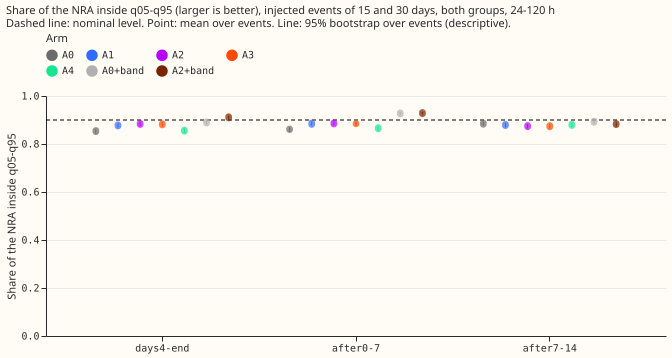
Coverage of the NRA by phase around an injected load-shift. Each point is one arm (A0 is experiment 584's C1; "+band" adds the gated wider band of experiment 583). The dashed line is the nominal 0.90. Lines are 95% event-block bootstrap intervals.
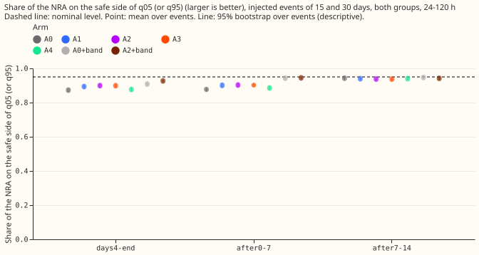
The one-sided share of the NRA that is on the safe side of the nearer tail quantile; nominal 0.95.
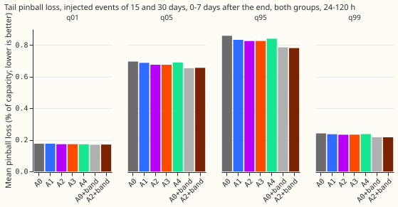
Mean pinball loss (the penalty for a quantile forecast; lower is better) in the 0 to 7 days after an injected load-shift ends.
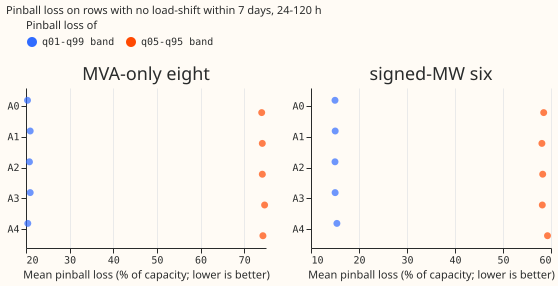
Pinball loss of the q05-q95 and q01-q99 bands on rows with no load-shift within 7 days.
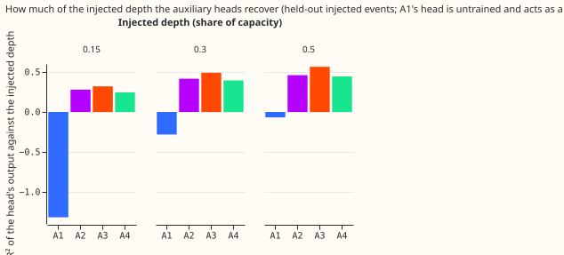
How much of the variance of the injected depth each head recovers on held-out injected events. A1's head is never trained, so its bar is a floor and is not shown.
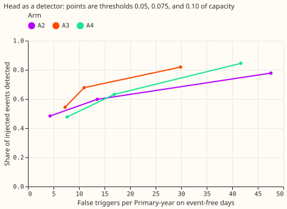
Share of injected events detected against false triggers per Primary-year on event-free days, for three thresholds on the head's output (0.05, 0.075, and 0.10 of capacity).
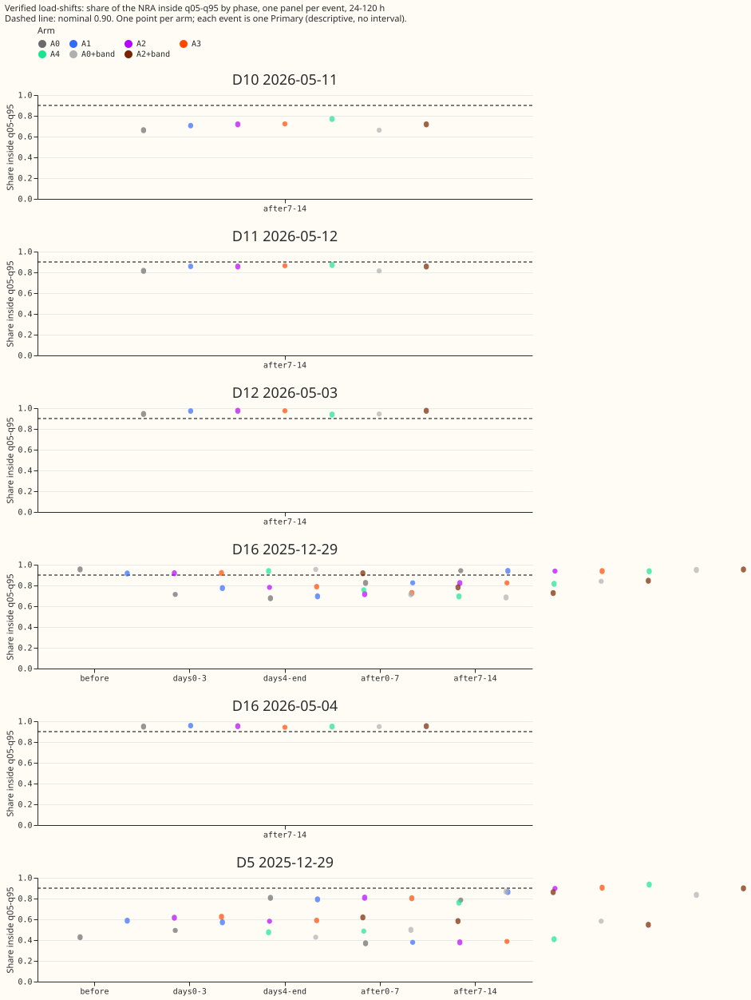
Coverage by phase for the two real December load-shifts (D5 and D16).
Day-ahead forecasts (issued 09:00 the day before the valid day) around the verified December pair. Each of the five arms is one panel. The orange line is the observed power and the dashed line the normal running arrangement. The gate strips are those of A2.
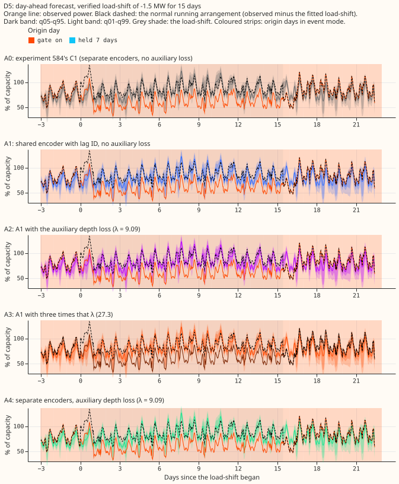
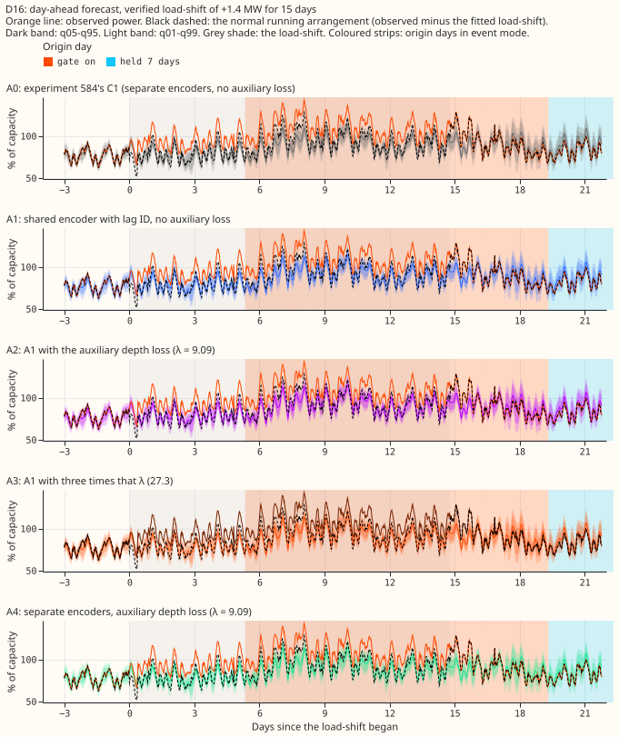
Day-ahead forecasts around six injected events (fixed rule: month 2025-10, the lowest-numbered Primary of each metering group; 15 days at 50% of capacity up and down, and 7 days at 30% up).
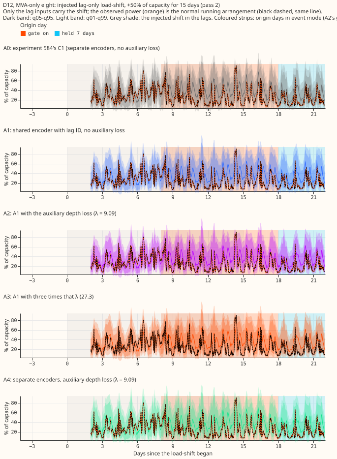
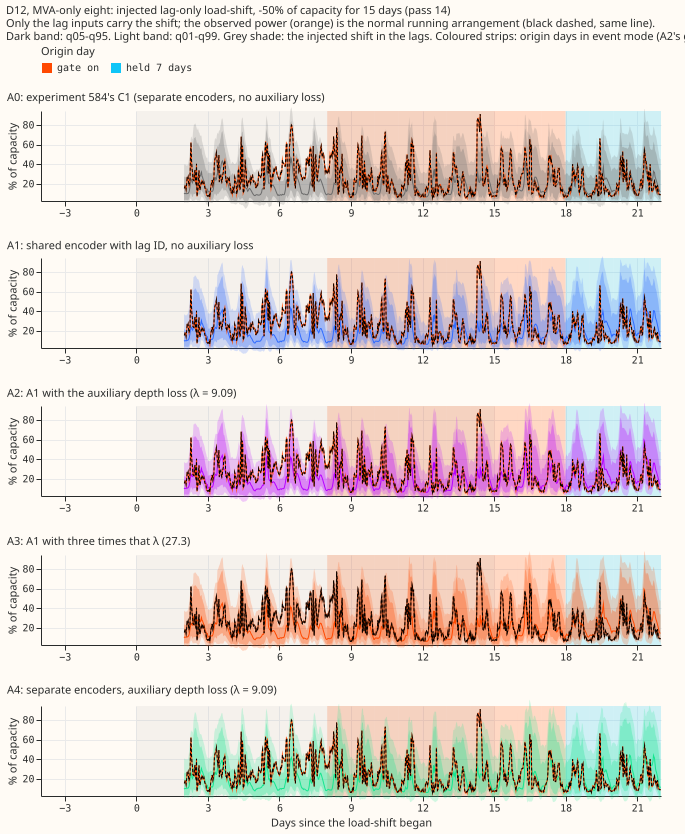
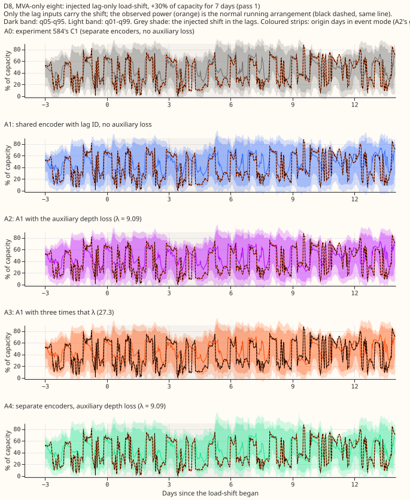
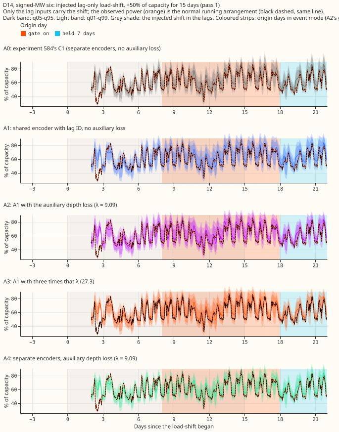
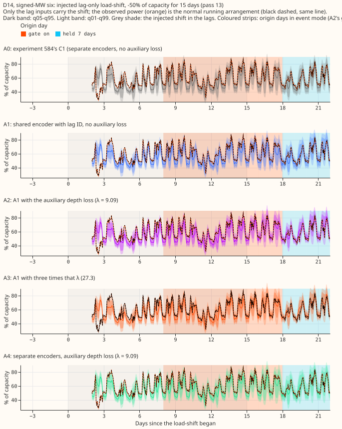
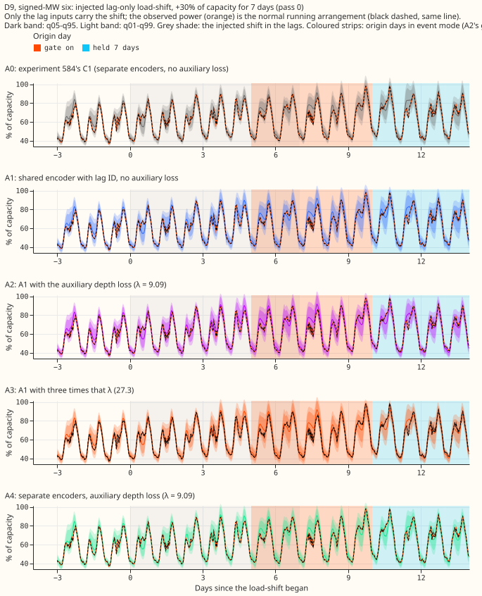
Other cuts (all lengths, one-sided shares, each group alone) sit beside this page as coverage90_*
and nra_side95_*. Stored forecasts cover 0 to 120 hours only, so no 14-day horizon plot exists;
NGED care about 1 to 10 days, so every number here is a short-lead result.
Arms and what each one is
All arms use the P5 recipe of experiment 574 (pre-train on ERA5 and CAMS weather, fit a fresh mixer on the ensemble history with a 3-day embargo, then a daily fine-tune with the embargo) and a daily fine-tune on lag-only synthetic load-shifts (depths 15%, 30%, and 50% of capacity, lengths 3, 7, 15, and 30 days, random sign, on 5% of each Primary's time) as in experiment 581.
- A0: experiment 584's stored C1 forecasts. Separate encoders for the day-old and week-old lag, no auxiliary loss. 44,050 weights.
- A1: one shared lag encoder with a learnt lag-ID embedding, the wiring of experiment 586's S1. No auxiliary loss. 45,475 weights, of which 1,089 sit in a head that is never trained and never used.
- A2: A1 plus the auxiliary loss, the mean squared error between the head's output and the injected depth, times lambda = 9.085. Lambda is the ratio of the mean gradient norm of the training loss to that of the auxiliary loss on the lag-encoder weights over 20 batches (2025-10, seed 0), so the two gradients are about the same size. The heads were untrained at that point, so the auxiliary gradient is larger once they have learnt, and lambda is therefore probably on the low side of equal. The auxiliary loss is off in validation and in early stopping.
- A3: A2 with 3 times lambda (27.26).
- A4: separate encoders plus the auxiliary loss at lambda = 9.085. 52,980 weights, 2,178 in the two heads.
- A5 (A2 with the head's output fed to the mixer): not run, because A2 and A3 did not help.
- At forecast time the head is dropped. The depth labels sit in two extra columns that exist only in the daily fine-tune's training tensor, and the neural network reads them in training mode only, so validation, test, and forecast rows carry no label.
Results
- Row set:
experiment_470_intersection_v1, five fold months (2025-10, 2025-12, 2026-01, 2026-03, 2026-06), 24 to 120 h unless stated, July 2026 unused, D15 and D18 cut before 2025-03-01, cleaned data. Retraining: coarse refits (days 0 and 14); the contrasts could depend on the cadence. - Coverage after the end (injected 15 and 30 day events, 672 Primary-events, 0 to 7 days after the end, q05-q95, 95% event bootstrap interval):
| Arm | Both groups | Eight MVA Primaries | Six MW Primaries | With the gated band | Mean width, % of capacity |
|---|---|---|---|---|---|
| A0 | 0.860 (0.849 to 0.870) | 0.859 | 0.861 | 0.927 | 22.69 |
| A1 | 0.885 (0.876 to 0.894) | 0.890 | 0.878 | 0.931 | 23.61 |
| A2 | 0.886 (0.877 to 0.894) | 0.890 | 0.880 | 0.929 | 23.44 |
| A3 | 0.884 (0.876 to 0.893) | 0.888 | 0.878 | 0.927 | 23.20 |
| A4 | 0.866 (0.856 to 0.875) | 0.868 | 0.862 | 0.921 | 22.45 |
- From day 4 of the event to its end (756 Primary-events), without and with the gated band: A0 0.854 and 0.889, A1 0.878 and 0.907, A2 0.884 and 0.911, A3 0.882 and 0.910, A4 0.856 and 0.889. Seven to 14 days after the end (720 Primary-events): A0 0.885, A1 0.879, A2 0.875, A3 0.874, A4 0.880.
- Safe side of q05 or q95, 0 to 7 days after the end: A0 0.876, A1 0.901, A2 0.903, A3 0.902, A4 0.885; with the gated band 0.943, 0.946, 0.945, 0.944, and 0.940, against 0.95 nominal.
- Following of the injected shift, all four lengths pooled (the change in the median forecast, as a share of the injected depth, experiment 581's measure, 24 to 120 h): from day 4 to the end A0 0.108, A1 0.110, A2 0.110, A3 0.104, A4 0.105; days 0 to 3 0.042 to 0.047 for all five; 0 to 7 days after the end 0.038 to 0.047. The median already follows the lags by only about a tenth of the depth in A0, so there was little to halve, and none of the arms halves it.
- Tails, after the end, both groups (mean pinball loss, % of capacity):
| Arm | q01 | q05 | q95 | q99 |
|---|---|---|---|---|
| A0 | 0.175 | 0.695 | 0.858 | 0.241 |
| A1 | 0.175 | 0.687 | 0.832 | 0.235 |
| A2 | 0.172 | 0.675 | 0.825 | 0.232 |
| A3 | 0.172 | 0.675 | 0.825 | 0.233 |
| A4 | 0.172 | 0.689 | 0.840 | 0.236 |
- Event-free rows, 24 to 120 h (335,520 rows at 16 Primaries, with no labelled or verified event within 7 days): CRPS (estimated as 2 × the mean pinball loss over the 11 stored quantile levels), in points of capacity, at the eight MVA Primaries and the six MW Primaries: A0 3.081 and 2.465, A1 3.057 and 2.445, A2 3.059 and 2.455, A3 3.074 and 2.451, A4 3.084 and 2.460. Contrasts, month-block bootstrap at the Bonferroni level of 10 counted tests, difference (interval), minimum detectable effect (MDE):
| Contrast | Eight MVA Primaries | MDE | Six MW Primaries | MDE |
|---|---|---|---|---|
| A1 minus A0 | -0.026 (-0.092 to 0.023) | 0.058 | -0.023 (-0.076 to 0.041) | 0.059 |
| A2 minus A1 | +0.003 (-0.020 to 0.017) | 0.018 | +0.009 (-0.012 to 0.024) | 0.018 |
| A3 minus A1 | +0.018 (-0.014 to 0.065) | 0.039 | +0.006 (-0.016 to 0.037) | 0.026 |
| A3 minus A2 | +0.016 (-0.004 to 0.054) | 0.029 | -0.003 (-0.020 to 0.016) | 0.018 |
| A4 minus A2 | +0.026 (-0.052 to 0.081) | 0.066 | +0.008 (-0.056 to 0.103) | 0.079 |
Every interval over all five folds contains zero. A1 minus A0 at the eight MVA Primaries is positive in two of the five fold months (+0.012 in 2025-10, +0.026 in 2026-06) and negative in the other three (-0.107, -0.026, -0.033). In the first fold pair alone (2025-10 and 2025-12, two blocks, so the bootstrap is degenerate and not to be trusted), A2 minus A1 at the eight MVA Primaries is +0.012 (0.009 to 0.015) and A3 minus A1 +0.042 (0.010 to 0.074): the auxiliary loss is, if anything, slightly worse than A1 there. The stop rule (A1 worse than A0 by more than max(0.03, MDE) with the interval excluding zero in the first fold pair) did not fire.
- Event-free calibration (share of the NRA below each quantile; all arms alike): below q05 0.050 to 0.054 at the eight MVA Primaries and 0.059 to 0.061 at the six MW Primaries; below q95 0.92 and 0.88 to 0.89, against 0.95 nominal, so the upper tail is thin on event-free rows in every arm, A0 included.
- Head recovery of the injected depth (held-out injected events, both lags pooled; R squared of the head's output against the injected depth, positive when it recovers variance; the scored groups are the eight MVA and six MW Primaries, and the other columns pool all three groups, including D15 and D18, where the heads do worst; 61% of the lag rows carry no injected shift, and the injected events use the same depth and length grid as the training shifts, so "held-out" means held out in time only):
| Arm | Scored groups | All three groups | Depth 0.15 | Depth 0.30 | Depth 0.50 | Eight MVA | Six MW | Length 3 days | Length 30 days |
|---|---|---|---|---|---|---|---|---|---|
| A1 (never trained) | -0.19 | -0.20 | -1.32 | -0.28 | -0.07 | -0.16 | -0.25 | -0.74 | -0.11 |
| A2 | 0.47 | 0.44 | 0.28 | 0.42 | 0.46 | 0.46 | 0.49 | 0.40 | 0.44 |
| A3 | 0.57 | 0.53 | 0.32 | 0.49 | 0.56 | 0.55 | 0.60 | 0.49 | 0.53 |
| A4 | 0.45 | 0.42 | 0.25 | 0.39 | 0.44 | 0.43 | 0.47 | 0.32 | 0.43 |
- The head as a detector (an origin day fires when the head's score exceeds a threshold of 0.05, 0.075, or 0.10 of capacity; 1,857 event-free Primary-days, about 5.1 Primary-years, so each false trigger rate rests on very few days): detection rate of injected events A2 0.78, 0.60, 0.48; A3 0.82, 0.68, 0.54; A4 0.84, 0.63, 0.48. Detection of the deeper events (30% and 50%) with A3 is 0.90, 0.81, 0.72. False triggers per Primary-year: A2 47.6, 13.6, 4.3; A3 29.9, 11.0, 7.3; A4 41.7, 16.9, 7.7. At threshold 0.075 the mean median onset delay of 3 and 7 day events is 1.4 to 2.4 days (shorter for deeper events). The false-trigger rates are dominated by D15 and D18 (208 of the 1,857 days, which plausibly hold unlabelled load-shifts). At the other Primaries (1,649 Primary-days) the rates at the three thresholds are A2 33.0, 5.3, 1.3; A3 15.7, 1.5, 0.4; A4 35.0, 10.8, 1.3. Every number here is for injected shifts, and no detector that reads the lags directly was run for comparison.
- Verified December pair, 0 to 7 days after the end, 24 to 120 h (descriptive; two Primaries), without and with the gated band:
| Event | A0 | A1 | A2 | A3 | A4 |
|---|---|---|---|---|---|
| D16, no band | 0.824 | 0.825 | 0.824 | 0.824 | 0.815 |
| D16, band | 0.840 | 0.844 | 0.845 | 0.844 | 0.839 |
| D5, no band | 0.369 | 0.379 | 0.379 | 0.387 | 0.408 |
| D5, band | 0.583 | 0.557 | 0.548 | 0.539 | 0.612 |
Before the event D5 coverage is 0.428 for A0 and 0.587, 0.615, 0.624, and 0.475 for A1 to A4; D16 from day 4 to the end is 0.677 for A0 and 0.696, 0.718, 0.728, and 0.694. The head's output on these real shifts is near zero: at D16 (verified depth +0.15 of capacity in the day-old lag) A2 reads 0.034 and A3 0.043; at D5 (depth -0.26) A2 reads +0.028 and A3 +0.010. The heads did not recognise either real shift.
- Predictions (written before any fit):
- P1 fails: following does not halve (0.104 to 0.110 from day 4 to the end, against 0.108 for A0), and after-end coverage without the band is 0.886 (A2) and 0.884 (A3), below 0.90.
- P2 is not contradicted: A1's CRPS is lower than A0's, but the interval (-0.092 to 0.023 at the eight MVA Primaries) is wider than max(0.03, MDE), so equivalence is not shown.
- P3 fails: R squared is 0.42 (A2) and 0.49 (A3) at depth 0.30, and 0.46 and 0.56 at depth 0.50, against at least 0.7.
- P4 is not contradicted on CRPS: A4's CRPS is 0.026 and 0.008 above A2's with intervals that contain zero but are wider than max(0.03, MDE). After-end coverage (a clause not in the prediction) is 0.866 for A4 against 0.886 for A2, and the two intervals only just separate.
- Decision rule: the auxiliary loss is not kept (following and after-end coverage unchanged from A1). The stop rule did not fire, so A2 and A3 were not run alone. Bonferroni count: 10 (12 with A5, which did not run).
- Not computed: the avoidable-curtailment cost (it needs node-level forecasts with generators);
BG2,
manual_heuristic, and climatology rows; weekly refits; A5; leaving one Primary out.
Checks
- Median forecast minus mean of the 11 stored quantiles, event-free rows, 24 to 120 h, % of capacity, per group (eight MVA Primaries and six MW Primaries): A0 -0.51 and -0.22, A1 -0.45 and -0.19, A2 -0.46 and -0.18, A3 -0.46 and -0.17, A4 -0.51 and -0.18. Only quantiles are stored, so the mean forecast is not stored. The gap is small beside the 6.2 and 5.3 mean absolute error.
- Error of the median beside the quantile contrasts (mean absolute error of the median, event-free, % of capacity, eight MVA and six MW Primaries): A0 6.22 and 5.32, A1 6.14 and 5.24, A2 6.16 and 5.27, A3 6.18 and 5.27, A4 6.21 and 5.25. The error of the median points the same way as the CRPS contrasts: A1 is lowest, and the auxiliary loss adds none of that gain.
- Triggers fired: trigger 2 (P1 fails). The explanation was tested above: the median follows the shifted lags only by about a tenth of the depth in A0 already, so the auxiliary loss had little to remove, and sharing alone moved the coverage. No other trigger fired; leaving one Primary out was not run.
- Reviews: a fresh Sonnet agent reviewed the fit wrapper before any fit. The review found that the first pre-training run was overwriting experiment 574's stored B1 statistics files. The stored files were bit-identical to the backup, so no harm was done; the run now writes to its own folder and a check asserts the stored files are unchanged. The review also reported lint and guard items, all fixed.
Caveats
- We found one verified transfer pair in the fold months (a load moved from D5 to D16 and back, December 2025), so every real-event number is descriptive.
- Injected events add a constant shift to the lag inputs only, so the head reads the injected lags and not a change in the power; the injected bank flatters any detector keyed on the lags.
- Lambda was set with untrained heads. Once the heads learn, the auxiliary gradient shrinks, so A2's effective weight may be below the intended equal-gradient setting; A3 (three times as large) bounds that and also found nothing.
- The first-pair bootstrap has two blocks and cannot be read as an interval.
- Unlogged events: NGED's logs may miss events, so the event-free rows may hold events no label covers. The false-trigger rates are then too high or too low in ways we cannot tell, and the real-event slices undercount.
- Horizon: stored forecasts cover 0 to 120 h; NGED care about 1 to 10 days.
What the next experiment should answer
Whether a detector that reads the lags directly, instead of a head inside the forecast network, can recognise the real December load-shifts and the longer-lead rows (days 5 to 10), where following may matter more than at 24 to 120 h.
Plain-language definitions
- Coverage: the share of half-hours at which the true NRA lies inside the stated band; a 90% band should contain it on 0.90 of rows.
- One-sided share on the safe side: the share of readings at or above q05 (or at or below q95); nominal 0.95.
- Pinball loss at q05 (or q95, q01, q99): the penalty for a quantile forecast, small when the quantile sits where the reading falls.
- Auxiliary loss: an extra training target that is not part of the forecast; its head is dropped when the forecast is made.
- Following: how much the median forecast moves with an injected shift, as a share of the depth of the shift.
Further definitions, with worked examples, are in experiment 582's metrics page.